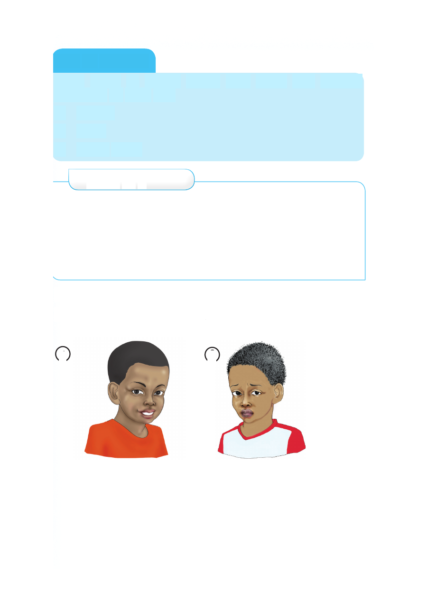

Kazi ya kufanya
Fuata hatua za kukata kucha. Kata kucha kwa kutumia
mojawapo ya vifaa hivi.
1. Wembe
2. Mkasi
3. Kikata kucha
Zoezi la 3
1. Taja vifaa vinavyotumika kukatia kucha.
2. Kucha ndefu zinahifadhi nini?
3. Ukichangia vifaa vya kukatia kucha utapata madhara
gani?
4. Kwa nini tunakata kucha?
Kutunza nywele
Angalia picha zifuatazo, kisha jibu maswali.
1 2
1. Taja tofauti ya picha namba 1 na 2.
2. Picha gani inakuvutia? Kwa nini?
3. Picha ya mtoto yupi inayofaa kuigwa?
Kazi ya kufanya Fuata hatua za kukata kucha. Kata kucha kwa kutumia mojawapo ya vifaa hivi. 1. Wembe 2. Mkasi 3. Kikata kucha Zoezi la 3 1. Taja vifaa vinavyotumika kukatia kucha. 2. Kucha ndefu zinahifadhi nini? 3. Ukichangia vifaa vya kukatia kucha utapata madhara gani? 4. Kwa nini tunakata kucha? Kutunza nywele Angalia picha zifuatazo, kisha jibu maswali. 1 2 1. Taja tofauti ya picha namba 1 na 2. 2. Picha gani inakuvutia? Kwa nini? 3. Picha ya mtoto yupi inayofaa kuigwa?